Physically Based
Rendering Encyclopedia
v. 0.97 (Dec. 19, 2017) Compiled by: Brian Yu (3py0n)
This example sourced from Physically Based Rendering Encyclopedia
There is no one way to accomplish a task, more specifically in texturing. The below is a guideline of the most
common and effective routes currently and is by no-means the only way to texture for PBR. Final name of this
document is in consideration. ENJOY!
Introduction
An emporium/bible of sorts to wherein I will try to encompass all there is to
know about creating physically based materials for the next-gen. I am still new to PBR texturing and
am learning as I make this bible. The reason for me making this is to have a central database for
artists and developers to look at to help them with their workflow. It’s also a great way for
people who are new to PBR to learn more. Please note that this is just a general guide/bible and is
not the end-all-be-all. That is to say, there is typically not only 1 way of doing things. Before I
finish, this document is also for people who have prior knowledge in texturing and making 3D art in
general.I would like to take this opportunity to thank all the wonderfully talented and innovative people
who I sourced from for their work on this subject matter. :) PS: This is more for the artistic side
and less of the math/deep calculations and how it works exactly, etc.
Copyright
I do not pretend to own all of what I am stating in this document. Some
parts will be from my personal experience/knowledge while other parts will be excerpts taken from sources
(credit will be identified at the beginning of a section).
Light Interaction & Really Sciencey Stuff
I won't be going through or compiling scientific formulas on how light is perceived and bounces off X material,
etc. There are many other sites for that online. Instead I'll just be compiling some basic rules of how light
interactions with types of materials. This will offer a better understanding when texturing in order to achieve more
realistic results!
Diffuse and Specular Reflectance (source)
When light hits a surface, it splits into two directions: some part of it is
reflected immediately while the rest gets refracted and enters the surface. The refracted light can be
absorbed or can be scattered around underneath the surface and exit again at a slightly different
location.
Light that gets reflected directly from the surface is handled as specular reflectance in a shading model. The light that is refracted
and undergoes subsurface scattering is handled as diffuse reflectance.
The amount of light that is reflected versus refracted depends on the surface
substance and the angle at which the light hits the surface. At a grazing angle, the amount of light that
gets reflected directly (specular) gets higher, until it reaches 100% at an extreme angle. This behavior is
described by the Fresnel effect.
Material Types (source)
There are only two categories of substances which are relevant for rendering:
metals (conductors like iron, gold, copper, etc.)
and non-metals (dielectric materials like
plastic, stone, wood, skin, glass, etc.). Both have special characteristics regarding diffuse and specular
reflectance.
Metal has no diffuse reflection.
This means that metal should have a
black diffuse color. All visible light is reflected directly
from the surface (specular reflectance). The different types of metal have characteristic specular colors.
Metal actually neither refracts nor absorbs ANY light, metals are so dense that
light can't actually enter the surface, which is why all of the light is reflected. (source)
In contrast to metal, non-metal has diffuse reflection, however the specular
reflection is a lot weaker and less varied than for metal. Specular reflectance for non-metal is
monochromatic (no color, just gray). Most non-metals reflect only a small fraction of the light as specular,
for most materials between 2% and 5%.
Energy Conservation (source)
Reflection and diffusion are mutually exclusive. This is
because, in order for light to be diffused, light must first penetrate the surface (that is, fail to
reflect). This is known in shading parlance as an example of “energy conservation”, which just
means that the light leaving a surface is never any brighter than that which fell upon it originally.
This is easy to enforce in a shading system: one simply subtracts reflected light
before allowing the diffuse shading to occur. This means highly reflective objects will show little to no
diffuse light, simply because little to no light penetrates the surface, having been mostly reflected. The
converse is also true: if an object has bright diffusion, it cannot be especially reflective.
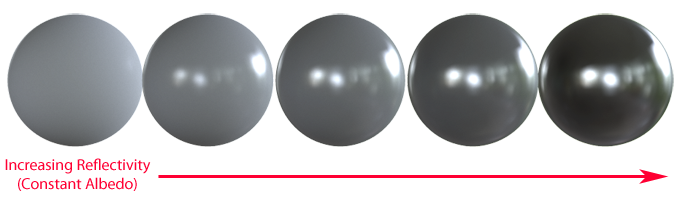
Energy conservation of this sort is an important aspect of physically-based shading.
It allows the artist to work with reflectivity and albedo values for a material without accidentally
violating the laws of physics (which tends to look bad). While enforcing these constraints in code
isn’t strictly necessary to producing good looking art, it does serve a useful role as a kind of
“nanny physicist” that will prevent artwork from bending the rules too far or becoming
inconsistent under different lighting conditions.
When the equations are properly balanced, a renderer should display rough surfaces as
having larger reflection highlights which appear dimmer than the smaller, sharper highlights of a smooth
surface. It is this apparent difference in brightness that is key: both materials are reflecting the same
amount of light, but the rougher surface is spreading it out in different directions, whereas the smoother
surface is reflecting a more concentrated “beam”:
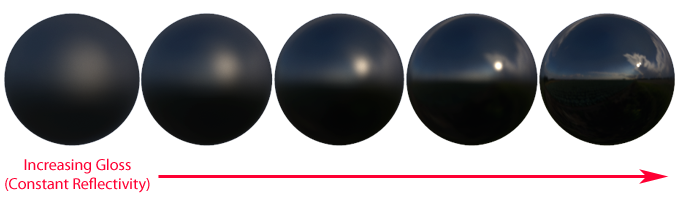
Here we have a second form of energy conservation that must be maintained, in
addition to the diffusion/reflection balance described earlier. Getting this right is one of the more
important points required for any renderer aspiring to be “physically-based”.
Linear-Space Lighting & Gamma (source)
Some more sciency information for those who are curiousity-inclined. I read it.
Great read! Here is the shortened version of the shortened version. the TL:DR if you will.
I’m almost making a note here incase the site goes down. It is a little dated.
The gamma colour space is 0 - 255. The neutral gray/50% is 187, not 127(128).
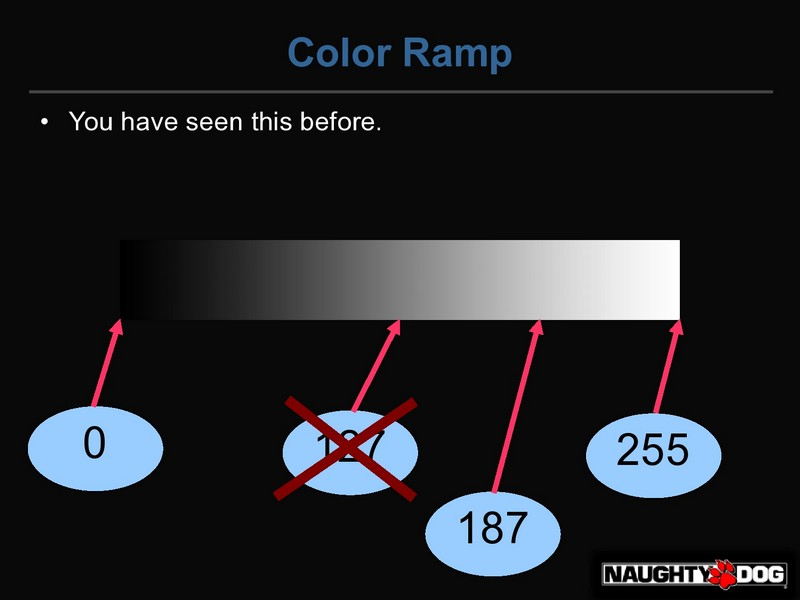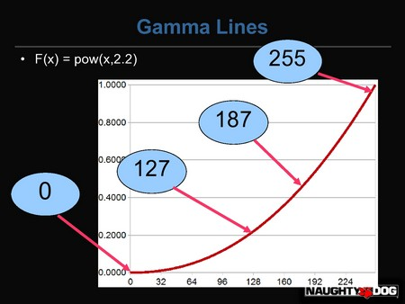
As of the original writing, standard monitor gamma is about 2.2, with some
exceptions.
A more indepth explanation of gamma and how it affects displays (monitor, cameras,
LCD on camera, etc) is given in the article. For the sake of lessening the amount of diagrams, etc
I’ve omitted it.
Gamma and Their Effect on Electronics
Though not entirely important to know for the sake of texturing, the single most
important thing to know about gamma according to the article is: An image taken from a camera stored on your
hard drive is brighter/pastelish compared to what is displayed on your monitor. How this breaks down
is that the camera takes a photo. The light is captured and the camera applies a formula/split each pixel
into 255 levels. Stored in gamma space. The image is
now “brighter” than it is in real life. Once the image is on your hard drive and viewed
through your monitor, another series of events take place where the gamma affects the image by a standard of
2.2 and gets output to the monitor looking the way it should (like in real life).
Here is where we get to the nitty gritty of gamma vs linear. I stated that I
wouldn’t put too many images but this part is too good not to.
1 2
3
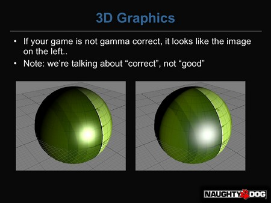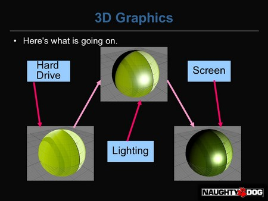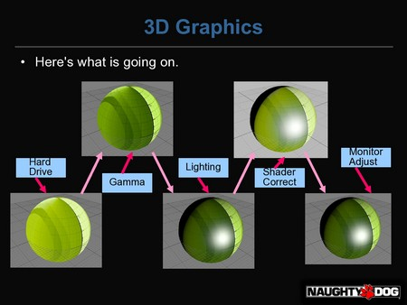
|
1. The left image does all the lighting
calculations in gamma-space. The right
image does all calculations in linear-space. If you are
on the PC/PS3/360, you should be doing your lighting in
linear-space. If you are on the Wii/PSP/iPhone,
you gotta do what you gotta do.
The image on the left is wrong for several reasons. First, it has a
really, really soft falloff, which does not look correctly. Also, you can see a lot of
hue-shifting, especially in the specular highlight. It seems to shift from white to yellow
to green and back to yellow. When you look at the image on the right, it looks like a
diffuse surface with a white specular highlight. It looks like what the lighting model says
it should look like. Finally, I’m not talking about what looks “good”,
I’m talking about what is “correct”. That’s an entirely different
discussion.
2. [Typical shader that does not convert texture back into
linear-space] You are first reading
the texture. BUT, the texture that is on your hard drive is in gamma-space. The texture is
much brighter and more desaturated than the texture you see when you look at it on your
screen. So you are taking this too-bright texture, and applying your lighting model to it,
for the middle image. Your monitor then applies a pow(2.2) to it which darkens it and gives
you the final result. How do you fix this?
|
4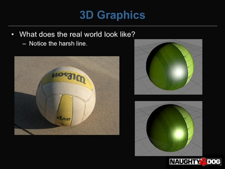
|
3. [Typical shader that converts texture back into linear-space] When
the texture is read by the hardware, it is in gamma-space (1st
image). But the pow(x,2.2) converts the texture
back into linear-space (2nd image). Then we do
the lighting calculations (3rd image). Now that we have the final image that we want, we apply a
pow(x,1/2.2) to convert it back into gamma-space. The
gamma-space image is sent to the monitor, which applies
it’s own pow(x,2.2) and displays the final image.
Of course, those pow() functions aren’t free in a shader. But they are in fact
free if you use the hardware sampler states. For the texture read, you can use D3DSAMP_SRGBTEXTURE, and for
the write to the framebuffer, you can use D3DRS_SRGBWRITEENABLE. So now your shader has the same code as
before, and the hardware states give you the conversions for free.
4. Here is a real image of a volleyball. The top CG
image is in linear-space and the bottom is in
gamma-space. Note how the linear image matches the harsh
falloff of the real image, but the gamma one does not.
So that’s how to make your image look “correct”. Making it look
“good” is an exercise for the reader.
That wraps up the shortened-shortened version of what is Linear Space and Gamma
Space. There is much to know and read and for all those who wish to venture on this journey I say, go
for it! But for this doc, I will be stopping here with the explanation as I feel it is an adequate
amount of information. What a great read!
For more information on this subject visit
Polycount’s
wiki.
PBR: The Definition & More
Physically based rendering (PBR) refers to the concept of using realistic
shading/lighting models along with measured surface values to accurately represent real-world materials.
PBR is more of a concept than a strict set of rules, and as such, the exact implementations of PBR systems tend to vary.
(source)
New VS Old (source)
The biggest difference of a physically based model compared to other older game
models is the use of specular. While a specular mask was often used to vary the intensity of specular
highlights over a surface, the specular color is a
physical value now
which is constant for a single type of material. To get variation
in the highlights, a gloss/reflection map should be used instead. Gloss is more powerful than the traditional specular mask, as
gloss influences not only the brightness of a highlight but also it's size and the sharpness of
environmental reflections.
Note that every engine/shader varies in one way or another to how it represents the
physical world, specifically lighting. Values/textures in UE4 may differ from CryENGINE 3 and
Marmoset, etc.
What is PBR or sometimes referred to as PBS or BRDF
(source)
The most trivial explanation of a PBR/PBS/BRDF (physical based renderer / physical
based shader / bidirectional reflectance distribution function) is that it is the bit of shader code
describing how a surface reacts to light. Generally, it is responsible for calculating the specular
highlights and diffuse characteristics of the surface material. They are mathematical approximations of how
surfaces react to light in the real world. In computer graphics, we try to model the physical world as
accurately as possible, but we are constrained by computation. For this reason, the mathematical efficiency
of BRDFs is very important. Some of the better known BRDFs - Blinn, Phong and Lambert, for instance - are
well known for this reason: they are computationally inexpensive to calculate and intuitive to adjust.
However they compromise efficiency for accuracy. If we concern ourselves with more expensive and more
accurate models, we uncover a second layer of shading models: Oren-Nayar, Cook-Torrance, Askikhmin-Shirley,
etc.
There is no single model that fits every situation, but there are some better than
others. The Cook-Torrance model has been shown to be a top performer, when compared against actual acquired
BRDF data. Of course, with the good comes the bad and Cook-Torrance is one of the most expensive models to
compute. But for overall results, it is hard to beat. So this is our target; a nice implementation of the
Cook-Torrance reflectance model. Now this maybe an issue when using Cook-Torrance model on mobiles and
consoles due to hardware limitations, so it's a question of which module to use.
Basic Theory of Physically-Based Rendering
(source)
Much of what makes a physically-based shading system different from its predecessors
is a more detailed reasoning about the behavior of light and surfaces. Shading capabilities have advanced enough that some of the old approximations can now be
safely discarded, and with them some of the old means of producing art.
Dielectric and Metallic Materials (source)
There are different types of substances in real world. They can be classified in
three main group: Insulators, semi-conductors and
conductors.
In game we are only interesting by two of them: Insulators
(Dielectric materials) and conductors (Metallic materials).
Artists should understand to which category a material belong to. This will have
influence on diffuse and specular value to assign to this material.
Dielectric materials are the most common materials. Their optical properties rarely
vary much over the visible spectrum: water, glass, skin, wood, hair, leather, plastic, stone, concrete,
ruby, diamond…
Metals. Their optical properties vary over the visible spectrum: iron, aluminium,
copper, gold, cobalt, nickel, silver…
Diffusion & Reflection
Diffusion and reflection
– also known as “diffuse” and “specular” light
respectively – are two terms describing the most basic separation of surface/light interactions. Most
people will be familiar with these ideas on a practical level, but may not know how they are physically
distinct.
Reflection/Specular
When light hits a surface boundary some of it will reflect – that is, bounce
off – from the surface and leave heading in a direction on the opposing side of the surface normal.
This behavior is very similar to a ball thrown against the ground or a wall – it will bounce off at
the opposite angle. On a smooth surface this will result in a mirror-like appearance. The word
“specular”, often used to describe the effect, is derived from the latin for
“mirror” (it seems “specularity” sounds less awkward than “mirrorness”).
Specular Colour (source)
Good rules for specular color range of dielectric materials are:
- No value under 0.02
- Common gemstones 0.05-0.17
- Common liquids 0.02-0.04
- When not finding reference for a dielectric material, setting a value of
0.04 (around plastic)
Except gemstones, any dielectric material we will use should be in the range
0.02-0.05
(more
values found here).
As you can expect, you won’t spend your time finding all the refractive indices
of metallic material. Especially since values are for pure laboratory material. But these specular colors
can be used as references. Moreover, we can see that specular colors for metallic objects are close to what
we think the color of the metal is. The basic rule for metal is to set up a value above 0.5.
Diffuse/Albedo
Not all light reflects from a surface, however. Usually some will penetrate into the
interior of the illuminated object. There it will either be absorbed by the material (usually converting to
heat) or scattered internally. Some of this scattered light may make its way back out of the surface, then
becoming visible once more to eyeballs and cameras. This is known by many names: “Diffuse
Light”, “Diffusion”, “Subsurface Scattering” – all describe the same
effect.
The absorption and scattering of diffuse light are often quite different for
different wavelengths of light, which is what gives objects their color (e.g. if an object absorbs most
light but scatters blue, it will appear blue). The scattering is often so uniformly chaotic that it can be
said to appear the same from all directions – quite different from the case of a mirror! A shader
using this approximation really just needs one input: “albedo”, a color which describes the fractions of various colors of
light that will scatter back out of a surface. “Diffuse color” is a
phrase sometimes used synonymously.
Diffuse Colour (source)
In the past, it was usual to bake everything in a “diffuse” texture to
fake lighting effects like shadow, reflection, specular… With newer engines, all these effects are
simulated and must not be baked. The best definition for
diffuse color in our engine is : How bright a surface is when lit by a 100% bright white light.
The lighting unit for these light sources is specified as the color a white
lambertian surface would have when illuminated by the light from a direction parallel to the surface
normal.
This mean that when you set up a light in the game editor with 1 in brightness and
point it directly on a quad mapped with a diffuse texture, you get the color as displayed in Photoshop (be
aware of postprocess).
One of the darkest substances on earth is charcoal, the brightest is fresh
snow.
Translucency & Transparency
In some cases diffusion is more complicated – in materials that have wider
scattering distances for example, like skin or wax. In these cases a simple color will usually not do, and
the shading system must take into account the shape and thickness of the object being lit. If they are thin
enough, such objects often see light scattering out the back side and can then be called translucent. If the
diffusion is even lower yet (in for example, glass) then almost no scattering is evident at all and entire
images can pass through an object from one side to another intact. These behaviors are different enough from
the typical “close to the surface” diffusion that unique shaders are usually needed to simulate
them.
Metals
Firstly, metals tend to be much more reflective than insulators (non-conductors).
Conductors will usually exhibit reflectivities as high as
60-90%, whereas insulators are generally much lower, in the 0-20%
range. These high reflectivities prevent most light from reaching the interior and
scattering, giving metals a very “shiny” look.
Secondly, reflectivity on conductors will sometimes vary across the visible
spectrum, which means that their reflections appear tinted. This coloring
of reflection is rare even among
conductors, but it does occur in some everyday materials (e.g. gold, copper,
and brass). Insulators as a general rule do not exhibit this effect, and their
reflections are uncolored.
Finally, electrical conductors will usually absorb rather than scatter any light that
penetrates the surface. This means that in theory conductors will not show any evidence of diffuse light. In
practice however there are often oxides or other residues on the surface of a metal that will scatter some
small amounts of light.
It is this duality between metals and just about everything else that leads some
rendering systems to adopt “metalness” as a direct input. In such systems artists specify the
degree to which a material behaves as a metal, rather than specifying only the albedo & reflectivity
explicitly. This is sometimes preferred as a simpler means of creating materials, but is not necessarily a
characteristic of physically-based rendering.
Fresnel (source) (source
2)
To put it simply, fresnel is the percentage of light that a surface reflects at
grazing angles.
In computer graphics the word Fresnel refers to differing
reflectivity that occurs at different angles. Specifically, light that lands on a
surface at a grazing angle will be much more likely to reflect than that which hits a surface dead-on. This
means that objects rendered with a proper Fresnel effect will appear to have brighter
reflections near the edges. Most of us have been familiar with
this for a while now, and its presence in computer graphics is not new. However, PBR shaders have made
popular a few important corrections in the evaluation of Fresnel’s equations.
The first is that for all materials, reflectivity becomes total for grazing angles
– the “edges” viewed on any smooth object should act as perfect (uncolored) mirrors, no
matter the material. Yes, really – any substance can act as a perfect mirror if it is smooth and
viewed at the right angle! This can be counterintuitive, but the physics are clear. (Ex. Probably akin to
asphalt looking like water/wavy mirror at extreme angles)
The second observation about Fresnel properties is that the curve or gradient between
the angles does not vary much from material to material. Metals are the most divergent, but they too can be
accounted for analytically.
The shading system can now handle the Fresnel effect almost entirely on its own; it
has only to consult some of the other pre-existing material properties, such as gloss and
reflectivity.
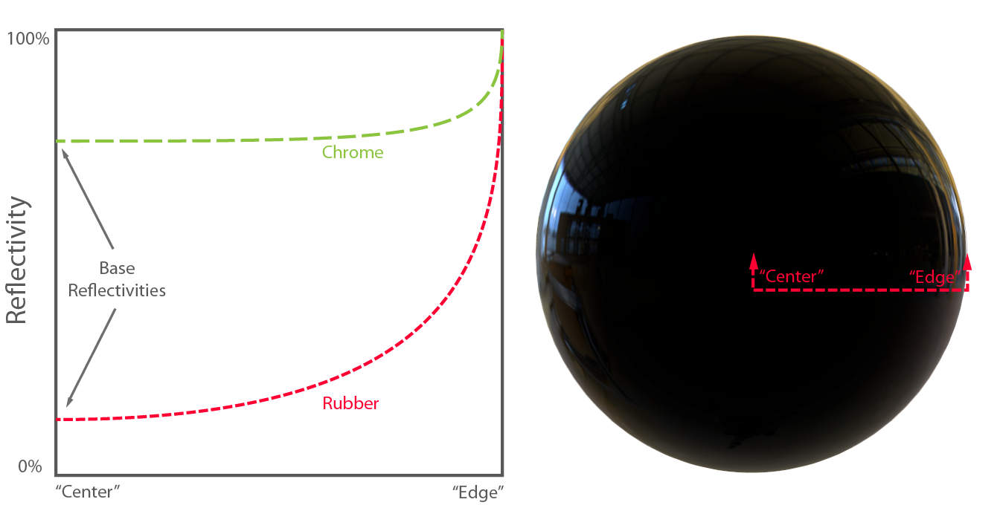
A PBR workflow has the artist specify, by one means or another, a “base
reflectivity”. This provides the minimum amount and color of light reflected. The Fresnel effect, once
rendered, will add reflectivity on top of the artist specified value, reaching up to 100% (white) at
glancing angles. Essentially the content describes the base, and
Fresnel’s equations take over from there, making the surface more reflective at various angles as
needed.
There is one big caveat for the Fresnel effect – it quickly becomes less
evident as surfaces become less smooth. More information on this interaction will be given a bit later
on.
Fresnel generally should be set to 1 (and is locked to a value of 1 with the
metalness reflectivity module) as all types of materials become 100% reflective at grazing angles. Variances
in microsurface which result in a brighter or dimmer Fresnel effect are automatically accounted for via the
gloss map content.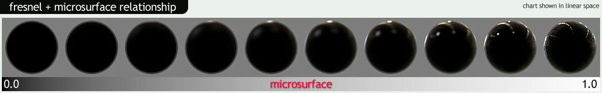
Note: Toolbag 2 does not currently support a texture map to control Fresnel
intensity.
Fresnel, in Toolbag 2 and most PBR systems, is approximated automatically by the
BRDF, in this case Blinn-Phong or GGX, and usually does not need an additional input. However, there is an
extra control for Fresnel for the Blinn-Phong BRDF, which is meant for legacy use as it can result in non
physically accurate results.
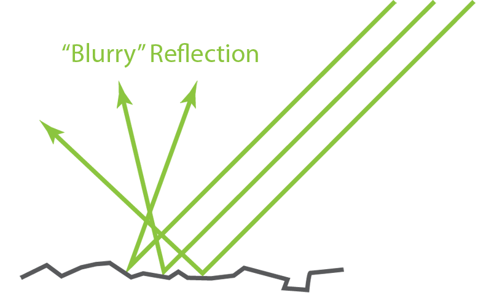
Microsurface (Roughness/Gloss)
Most real-world surfaces have very small imperfections: tiny grooves, cracks, and
lumps too little for the eye to see, and much too small to represent in a normal map of any sane resolution.
Despite being invisible to the naked eye, these microscopic features nonetheless affect the diffusion and
reflection of light.
Microsurface detail has the most noticeable effect on reflection (subsurface
diffusion is not greatly affected and won’t be discussed further here). In the diagram to the left,
you can see parallel lines of incoming light begin to diverge when reflected from a rougher surface, as each
ray hits a part of the surface with a different orientation. In short, the rougher the surface gets, the
more the reflected light will diverge or appear “blurry”.
Unfortunately, evaluating each microsurface feature for shading would be prohibitive
in terms of art production, memory use, and computation. So what are we to do? It turns out if we give up on
describing microsurface detail directly and instead specify a general measure of
roughness, we can write fairly accurate shaders that produce similar results. This
measure is often referred to as “Gloss”,
“Smoothness”, or “Roughness”. It can be specified as a
texture or as a constant for a given material.
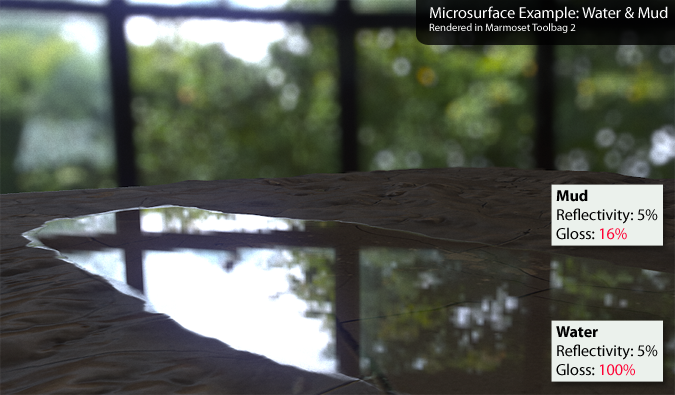
This microsurface detail is
a very important characteristic for any material,
as the real world is full of a wide variety of microsurface features. Gloss mapping is not a new concept,
but it does play a pivotal role in physically-based shading since microsurface detail has such a big effect
on light reflection. As we will soon see, there are several considerations relating to microsurface
properties that a PBR shading system improves upon.
Microsurface gloss directly affects the apparent brightness of
reflections. This means an artist can paint variations
directly into the gloss map – scratches, dents, abraded or polished areas, whatever – and a PBR
system will display not just the change in reflection shape, but relative intensity as well. No “spec mask”/reflectivity changes required!
This is significant because two real world quantities that are physically related
– microsurface detail and reflectivity – are now properly tied together in the art content and
rendering process for the first time. This is much like the diffusion/reflection balancing act described
earlier: we could be authoring both values independently, but since they are related, the task is only made
more difficult by attempting to treat them separately.
Further, an investigation of real world materials will show that reflectivity values
do not vary widely (see the earlier section on conductivity). A good example would be water and mud: both
have very similar reflectivity, but since mud is quite rough and the surface of a puddle is very smooth,
they appear very different in terms of their reflections. An artist creating such a scene in a PBR system
would author the difference primarily through gloss or roughness maps rather than adjusting reflectivity, as
shown above.
Microsurface properties have other subtle effects on reflection as well. For
example, the “edges-are-brighter” Fresnel effect diminishes somewhat with rougher surfaces (the
chaotic nature of a rough surface ‘scatters’ the Fresnel effect, preventing the viewer from
being able to clearly resolve it). Further, large or concave microsurface features can “trap”
light – causing it to reflect against the surface multiple times, increasing absorption and reducing
brightness. Different rendering systems handle these details in different ways and to different extents, but
the broad trend of rougher
surfaces appearing dimmer is the same.
This section only serves as a very basic and introductory lesson to the world of
PBR. I won’t be going in-depth on the math and science behind it as more links will be provided
in the additional references section. However
after reading this section, one should be familiar enough with how PBR works now to understand the rest of
this document.
Gloss Additional Info (source)
From my point of view, the most difficult texture to author is gloss. Reasons are as
follows:
- Specular power range deduced from gloss values is completely dependent of
your engine.
- A lot of the detail is contained here compared to the previous method
wherein details were spread out through all the maps
- Values are numerical, neither color nor vector.
Details like scratches, pores, grooves, etc can be added even without them being in
the normal map. Hence why this map is also referred to as microsurface.
Guidelines & Basics: The How-To Guide
This section will cover the basics of creating art in the PBR workflow. It will
do its best to answer questions before you even have them. It won’t get too technical however as
that will be covered in another section if the need arises.
Artists who are unfamiliar with the concept of PBR systems often assume that content
creation is drastically different, usually because of the terminology that is used. If you’ve worked
with modern shaders and art creation techniques you already have experience with many of the concepts of a
physically based rendering system.
Figuring out what type of content to create, or how to plug your content into a PBR
shader can be confusing, so here are some common terms and concepts.
Advances in Technology
Since the conception of this encyclopedia back in 2014 there has been so many
advances in technology and the production side of art, so much so that a lot of the how-to guide is outdated
but I will still leave it in (partially to show what texturing was like pre-Painter and also just for those
information junkies). From the Quixel suite making huge strides to Allegorithmic releasing newer and
better tools for the pipeline (Substance Painter & Designer), it’s been easier than ever to have
materials that resemble their real-world counterparts. But tread lightly as heading this also makes
one’s base knowledge of how to get to life-like materials weak. You’re essentially pushing
and pulling sliders, which is totally fine! It speeds up workflow and produces faster and better results,
but sometimes it’s nice to know where things started/came from. In spite of this, the Substance
library makes it very easy to produce fantastic results with minimal effort (compared to before when one had
to author each map individually, manually) but also leaves
room for some faking of materials (maybe throwing up the metalness slider up to achieve a certain look).
Just be wary and informed.
Most Common Workflows
- Albedo, Specular/Reflection, Roughness/Gloss, Normals, anything else (i.e.
detail normals, separate AO/cavity, etc depending on need and shader)
- Albedo/Specular in 1 map, Metalness, Roughness/Gloss, Normals, anything else
like #1
- Any other workflow is purely depicted by the project, studio, engine,
etc.
Guidelines for Creating Different Materials (source)
The material substance is defined to a huge degree by the specular color. Use a
reference table to pick the appropriate color for the desired material type.
Non-Metals
- Non-metal has monochrome/gray specular color. Never use colored specular for
anything except certain metals unless certain of what you are doing
- [Specular] The sRGB color range for most
non-metal materials is usually between 40 and 60. It should never be higher than 80/80/80.
- A good clean diffuse map is required.
Metals
- The specular color for metal should always be above sRGB 180.
- Metal can have colored specular highlights (for gold and copper for
example).
- Metal has a black or very dark diffuse color.
Energy Conservation (source)
The concept of energy conservation states that an object can not reflect more light
than it receives.
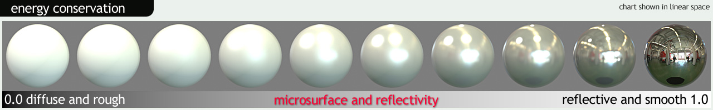
For practical purpose, more diffuse
and rough materials will reflect
dimmer and wider
highlights, while smoother and
more reflective materials will reflect brighter and tighter highlights.
Diffuse/Albedo (source)
Diffuse/Albedo maps are generally gamma space and are
quite flat colour wise.
Albedo is pure colour, no lighting information
baked in like we used to do with diffuse maps. (source)
The diffuse color defines how bright a surface is when lit directly by a white light
source with an intensity of 100%. More physically speaking, it defines which percentage for each component
of the RGB spectrum does not get absorbed when light scatters underneath the surface. A diffuse map is
always required. In most cases the diffuse color in the material editor should be set to white
(255/255/255).
For pure metal materials, the
diffuse color should be black
as explained before. Rusty metal/oxidation however needs some
diffuse color.
Please note the values below are a little outdated. (source)
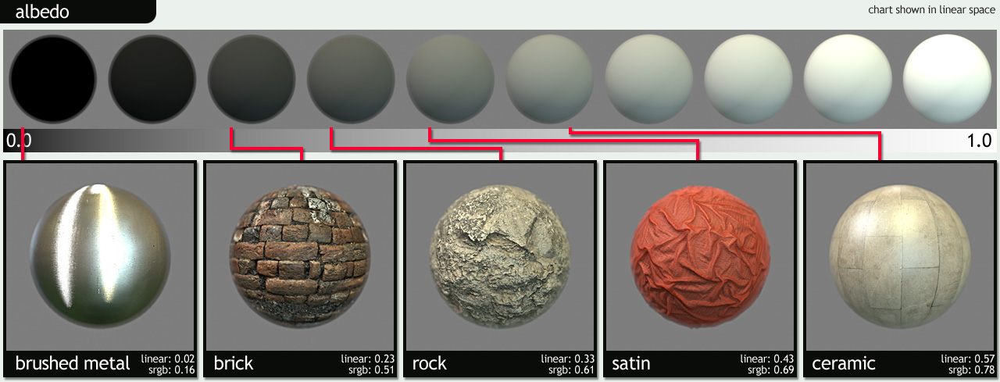
An albedo map defines the
color of diffused light. One of the biggest differences between an albedo map in a PBR system and a traditional diffuse
map is the lack of directional light or ambient occlusion.
Directional light will look incorrect in certain lighting conditions, and ambient
occlusion should be added in the separate AO
slot.
The albedo map will sometimes define more than the diffuse color as well, for
instance, when using a metalness map, the albedo map defines the diffuse color for insulators (non-metals)
and reflectivity for metallic surfaces.
Specular/Reflection/Reflectivity (source) (source
2)
Specular/Reflection/Reflectivity maps generally
are Gamma space.
Reflectance is again, a measured value for a material. there are plenty of sources
online which you can get the measured reflective colours for various materials. Typically speaking, most
non-metals fall into a white 0.04 range (linear), while metals (having no albedo and being pure reflection)
have much higher, coloured reflectance. (source)
Reflectivity is the percentage of light a surface reflects. All types of reflectivity
(aka base reflectivity or F0) inputs, including specular, metalness, and IOR, define how reflective a
surface is when viewing head on, while Fresnel defines how reflective a surface is at grazing angles.
A spec map won’t be needed to directly set reflectivity (when using metalness
workflow) but is still required in the alternative workflow. The spec map is combined with your diffuse in the form of the albedo map in the
metalness workflow.
Specular color is a physical
value now which is constant
for a single type
of material. So in
essence, it will look quite flat compared to pre-PBR spec maps.
The specular color defines how much light gets reflected immediately from the surface
when the light source is directly above the surface. This is the minimum specular intensity, under grazing
angles it will increase due to the Fresnel effect. As the specular color is specific for a certain type of
material, it can also be considered as a mask for the type of material/substance. The specular color is a
physical value which should be picked directly from a reference table. As such, it does not leave much
artistic freedom.
Please note the values below are a little outdated.
(source)
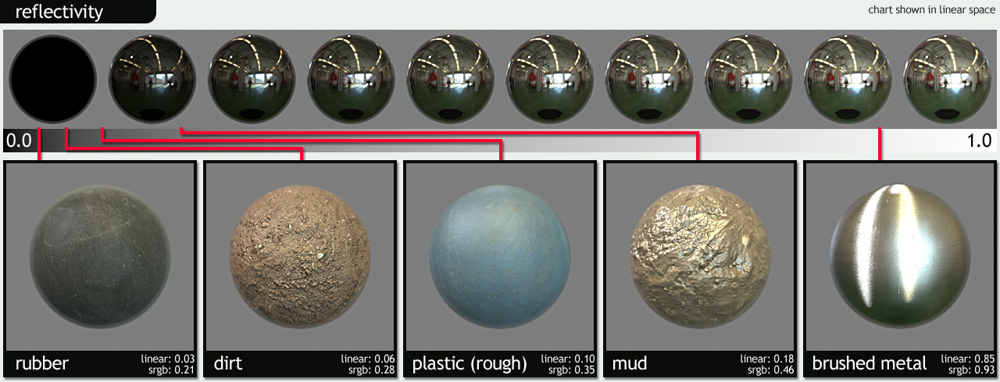
Its important to note how narrow the
range of reflectivity is for insulative (non-metal) materials (see below).
Combined with the concept of energy
conservation it’s easy to conclude that surface variation should generally be represented in the
microsurface map, not the reflectivity map. For a given material type, reflectivity tends to remain fairly constant.
Reflection color tends to be neutral/white for insulators, and
colored only for metals. Thus, a map specifically dedicated to reflectivity
intensity/color (commonly called a specular map) may be dropped in favor of a metalness map.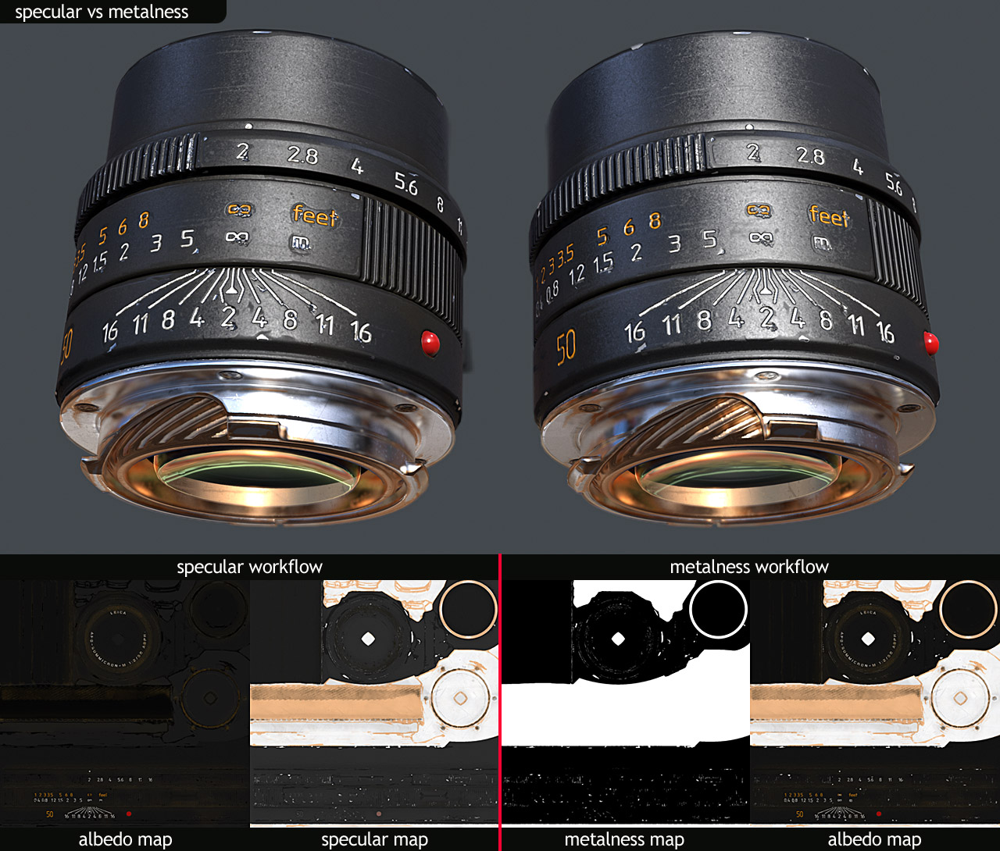
Traditional specular maps offer more control over the the specular intensity and
color, and allow greater flexibility when trying to reproduce certain complex materials. The main drawback
to a specular map is that it generally will be saved as a 24 bit file resulting in more memory use. It also
requires artists to have a very good understanding of physical material properties to get the values right,
which can be a positive or negative depending on your perspective.
Most non-metals reflect 2% to 5% of the light as specular and the highlight is
monochrome/gray. As the variation is so little, it is often enough to use a constant specular color instead
of a specular texture map. However, if metal and non-metal are mixed in a single texture, it is required to
use a specular map, as metal has a much brighter specular color than non-metal. If a specular map is used,
the specular color in the material editor should be set to white which is 255/255/255, as it gets multiplied
with the values from the specular map and would otherwise lower the physical values from the map.
Index of Refraction (IOR) (source)
IOR is another way to define reflectivity, and is
equivalent to the specular and metalness inputs. The biggest difference from the specular input is that IOR
values are defined with a difference scale. The IOR scale determines how fast
light travels through a material in relation to a vacuum. An IOR value of 1.33
(water) means that light travels 1.33 times slower through water than it does the empty vacuum of space. You
can find more measured values in the Filmetrics
Refractive Index Database.
Insulators (non-metal), IOR values
do not require color information, and can be entered into the index field directly, while the extinction
field should be set to 0.
Metals that have color reflections,
will need a value for the red, green and blue channels. This can be done with an image map input (where each
channel of the map contains the correct value). The extinction value will also need to be set for metals,
which you can usually find in libraries that contain IOR values.
Using IOR as opposed to specular or metalness input
is generally not advised, as it is not
typically used in games, and getting the correct value in a texture
with multiple material types is difficult. IOR input is supported in Toolbag 2 more for scientific purposes
than practical.
Metalness (source)
Metalness maps generally are Gamma space.
A metalness map is not more or less physically accurate than a standard specular
map. It is, however, a concept that may be easier to understand, and a metalness
map can be packed into a grayscale slot
to save memory. The drawback
to using a metalness map over a specular map is a loss
of control over
the exact values for insulative materials. (refer to
the above image)
Protips (source)
When using a metalness map:
Insulative surfaces - pixels set to 0.0 (black) in the
metalness map – are assigned a fixed reflectance value (linear: 0.04 sRGB: 0.06) and use the albedo
map for the diffuse value.
Metallic surfaces – pixels set to 1.0 (white) in
the metalness map – the specular color and intensity is taken from the albedo map, and the diffuse
value is set to 0 (black) in the shader. Gray values in the metalness map will be treated as partially
metallic and will pull the reflectivity from the albedo and darken the diffuse proportionally to that value
(partially metallic materials are uncommon).
Metalness maps should use values of 0 or 1 (
some gradation can be okay for
transitions). Materials like painted
metal should not be set to
metallic as paint is an insulator. The metalness value should represent the top layer of the material.
Marmoset Earthquake’s testimonial (source)
So the way the metalness thing works is basically this:
A. Your albedo map is both your diffuse and spec
map
B. The metanless map defines which sections are metal and
which are not. But what its really doing is the more metal it is, the more it darkens the diffuse and pulls
the specular intensity and color from the albedo. Black values in the metalness map represent non-metals,
and for those, a low, fixed specular intensity is used (I don't remember the value off hand).
However, If you use mid-values in the metalness mask you can sort of hack it into
doing what you want. You don't need to stick to black or white. But then it will pull the spec color
from there as well, which works for things like Christmas ornaments, but not really for glossy
plastics.
But really, if you want fine control over the specular color and specular intensity
for non-metals, you shouldn't be using the metalness function, you should use the standard blinn-phong,
as that will let you do exactly that. With energy conservation on, and a bright spec intensity value with
blinn-phong, it will basically work the same as the metalness thing (ie: it will darken the diffuse to make
it appear more metal-ish)
Is Metalness Map a requirement? (source)
No, a metalness map is just one method of
determining reflectivity and is generally not more or less physically accurate than using a
specular color/intensity map.
If a metalness map is used, the spec and albedo maps are combined into one, thus the
need for a separate spec map is negated.
Gloss/Roughness/Microsurface (source) (source
2)
Gloss/Roughness/Microsurface maps should
generally be linear space (sRGB off), but its not a big deal if you use sRGB/Gamma
space.
Gloss defines the roughness/smoothness of a surface.
Roughness is calculated in a specifically measure way and requires 0 - 1 input only.
(source)
Typically all the detail is located here. Scratches, wear, finger prints, etc
are located in this map. It is more or less the same pre-PBR.
A a low gloss value means that the surface is rough while a high value means the
surface is very smooth and shiny. The roughness influences the size and the intensity of specular
highlights. The smoother/glossier a surface is, the smaller the specular highlight will be. A more
narrow/smaller highlight will at the same time be brighter in order to obey to the rules of energy
conservation.
A gloss map is used and creates interesting and plausible variation on the specular
highlights.
Most materials should have a gloss map, as it can give a lot of good variation to
the shading. Gloss is closely related to normal maps, as high frequency details in a normal can create some
feeling of roughness as well. However, gloss is more the micro-scale roughness of the material.
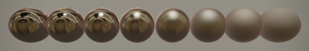
Note how the specular highlight becomes smaller and brighter with
an increasing gloss value, making the material look smoother (Image Source: Real-Time Rendering)
Please note the values below are a little outdated. (source)
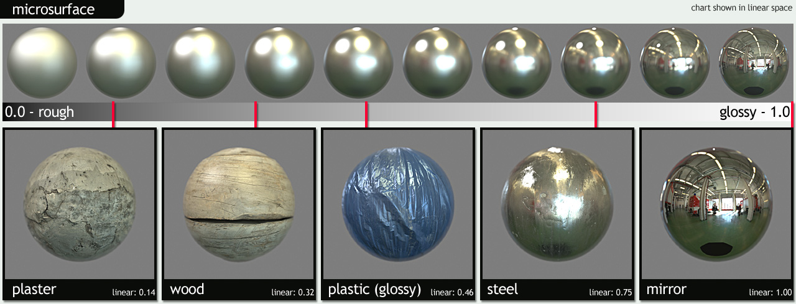
Here we see the how the principles of energy conservation are affected by the
microsurface of the material, rougher surfaces will show
wider, but dimmer specular reflections while smoother surfaces
will show brighter, but
sharper specular reflections.
Depending on what engine you’re authoring content for, your texture may be
called a roughness map instead of a gloss map. In practice there is little difference between these two
types, though a roughness map may have an inverted mapping,
ie: dark values equal glossy/smooth surfaces while bright values equal rough/matte surfaces. By default,
Toolbag expects white to define the smoothest surfaces while black defines roughest surfaces, if
you’re loading a gloss/roughness map with an inverted scale, click the invert check box in the gloss
module.
Ambient Occlusion (source)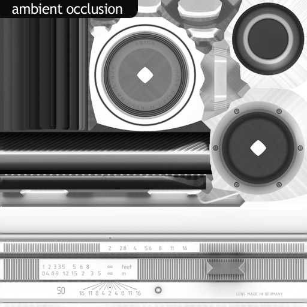
Ambient occlusion(AO) represents large scale occluded light and is generally baked
from a 3d model.
Adding AO as a separate map as opposed to baking it into the albedo and specular
maps allows the shader to use it in a more intelligent way. For instance, the AO function only occludes
ambient diffuse light (the diffuse component of the image based lighting system in Toolbag 2), not direct
diffuse light from dynamic lights or specular reflections of any kind.
AO should generally not be multiplied on to specular or gloss maps. Multiplying AO
onto the specular map may have been a common technique in the past to reduce inappropriate reflections (e.g.
the sky reflecting on an occluded object) but these days local screen space reflections do a much better job
of representing inter-object reflections.
Cavity (source)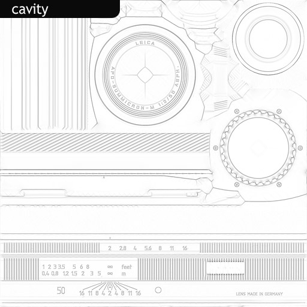
A cavity map represents small scale occluded light and is generally baked from a 3d
model or a normal map. An easy and painless way of creating a cavity map would be by using NDO2 wherein it
generates it via a normal map.
A cavity map should only contain the concave areas (pits) of the surface, and not
the convex areas, as the cavity map is multiplied. The
content should be mostly white with darker sections to represent the recessed areas of the surface where
light would get trapped. The cavity map affects both diffuse and specular from
ambient and dynamic light sources.
Alternatively, a reflection occlusion map can be loaded into
the cavity slot, but be sure to set the diffuse cavity value to 0 when doing this.
Linear Lighting - Linear Intensity Response (source)
When you are using gamma space lighting, the colors and textures that are
supplied to a shader have a gamma correction applied to them. When they are used in a shader the colors of
high luminance are actually brighter than they should be for linear lighting. This means that as light
intensity increases the surface will get brighter in a non linear way. This leads to lighting that can be
too bright in many places, and can also give models and scenes a washed-out feel. When you are using linear
lighting, the response from the surface remains linear as the light intensity increases. This leads to much
more realistic surface shading and a much nicer color response in the surface.
Typically PBR shaders use Linear Colour Space.
(source)
Example of Texture Maps
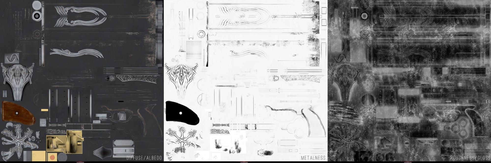
Please note the metalness map approach was used in this scenario. (source)
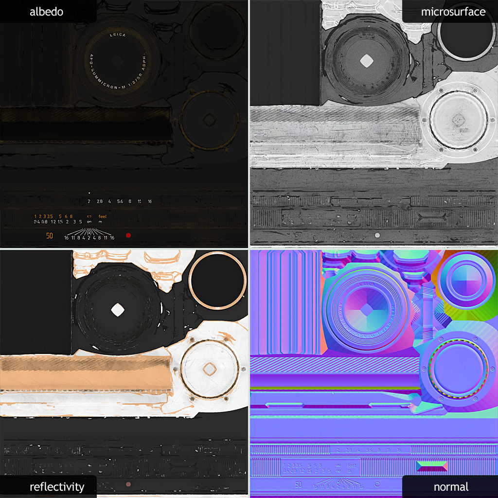
Please note the specular map workflow was used in this scenario. (source)
Creating Texture Content (source)
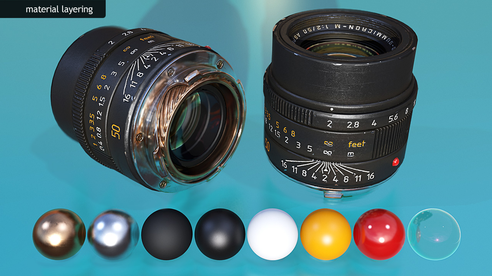
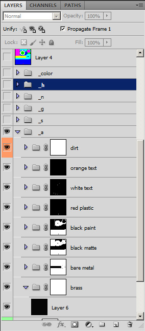
There are many ways to create texture content for PBR systems; the exact method you
choose will depend on your personal preferences and what software you have available to you. Here is a quick
recap of the method I used to create the lens above:
First, basic materials were created in Toolbag for each surface type using a
combination of tiling textures from Megascans, measured data from known materials, and where lacking
appropriate reference, logic and observation, to determine the values. Creating the base materials in
Toolbag allows me to quickly adjust values and offers a very accurate preview of the end result.
Tip: Often I assign base materials directly to my high poly
model to get a clear idea of how the texture will come together before doing the final bakes.
After setting up my base materials I brought the values and textures into Photoshop
and started layering them in a logical manner. Brass at the bottom, nickel plating, matte primer, semi-gloss
textured paint, paint for the lettering, and finally the red glossy plastic. This layering setup provides an
easy way to reveal the various materials below with simple masks.
After I have my base layers set up and blended together to represent various stages
of wear, I added some extra details. First I used dDo to generate a dust and dirt pass, and then I finished
it off with fine surface variation in the gloss map.
The exact method you use to create content for a PBR system is much less important
than the end result, so feel free to experiment and figure out what works best for your needs. However, you
should void tweaking materials values to look more interesting in a specific lighting environment. Using
sound base values for your materials can greatly simplify the process, increase consistency and asset reuse
on larger projects, and will ensure that your assets always look great no matter how you light them.
Material Reference Values
Should be considered as a general/base guideline and not
the absolute/only value. This is because of various real world conditions,
weathering, age, purity of material, etc. Some values will contradict each other (ex. water). Select
or play with the present values and adjust accordingly, depending on the shader/engine you are using.
Refraction Index of Various Substances for 3D Modelers - click
here
Lastly take special consideration of the colour space for each respective
value.
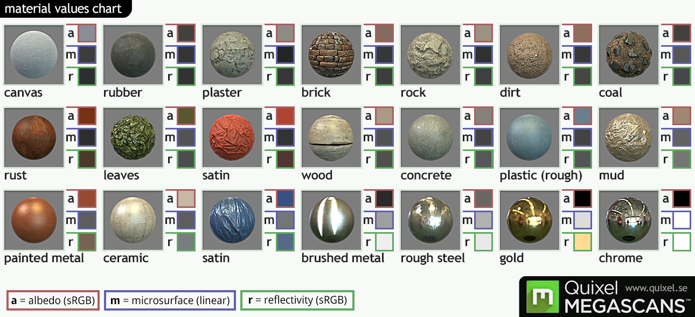
(above
source)
Base Colour (source)
Another chart for base colours. Note that depending on the engine (this is
based on Google’s new Filament
renderer), the values may differ slightly.
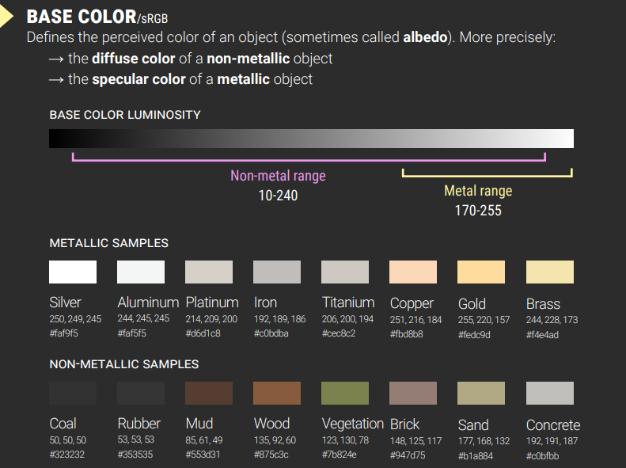
Metallic (source)
Another chart for base colours. Note that depending on the engine (this is
based on Google’s new Filament
renderer), the values may differ slightly.
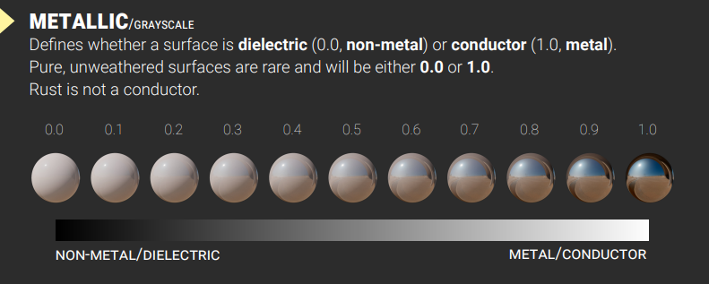
Roughness (source)
Another chart for base colours. Note that depending on the engine (this is
based on Google’s new Filament
renderer), the values may differ slightly.
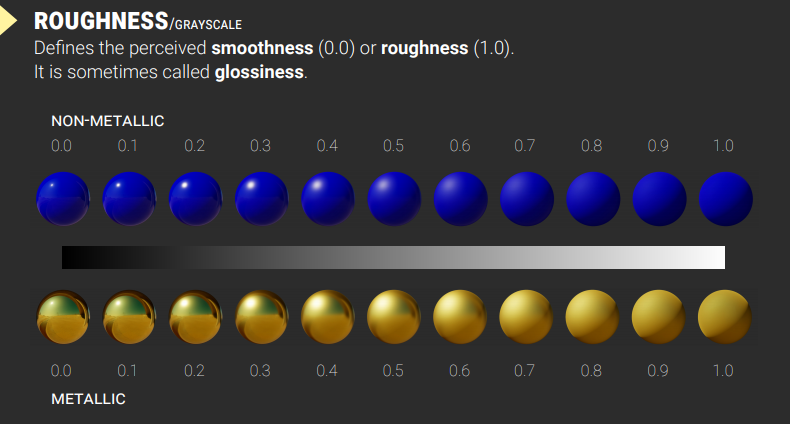
Reflectance (spec) (source)
Another chart for base colours. Note that depending on the engine (this is
based on Google’s new Filament
renderer), the values may differ slightly.
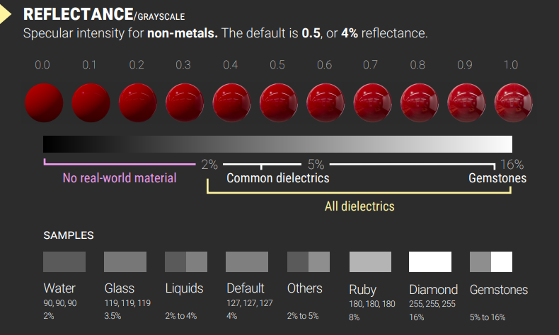
Anisotropy (source)
Another chart for base colours. Note that depending on the engine (this is
based on Google’s new Filament
renderer), the values may differ slightly.
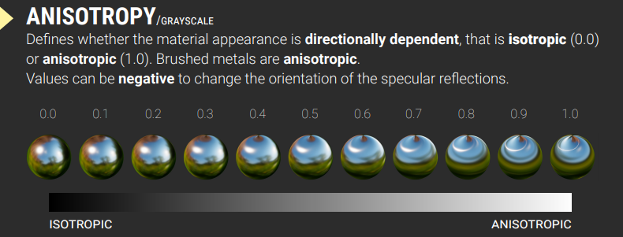
Clear Coat & Clear Coat Roughness (source)
Another chart for base colours. Note that depending on the engine (this is
based on Google’s new Filament
renderer), the values may differ slightly.
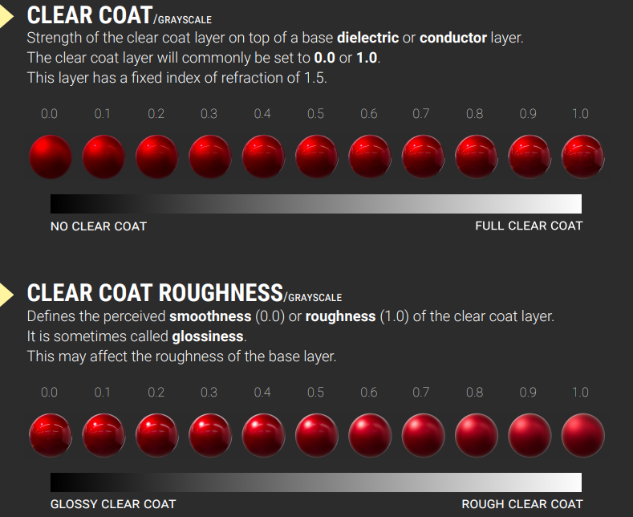
Specular Colour (source)
|
Material
|
sRGB Color
|
Linear (Blend Layer)
|
|
Water
|
38 38 38
|
0.02
|
|
Skin
|
51 51 51
|
0.03
|
|
Hair
|
65 65 65
|
0.05
|
|
Plastic / Glass (Low)
|
53 53 53
|
0.03
|
|
Plastic High
|
61 61 61
|
0.05
|
|
Glass (High) / Ruby
|
79 79 79
|
0.08
|
|
Diamond
|
115 115 115
|
0.17
|
|
Iron
|
196 199 199
|
0.57
|
|
Copper
|
250 209 194
|
N/A
|
|
Gold
|
255 219 145
|
N/A
|
|
Aluminum
|
245 245 247
|
0.91
|
|
Silver
|
250 247 242
|
N/A
|
|
If a non-metal material is not in the list, use a
value between 45 and 65.
|
|
|
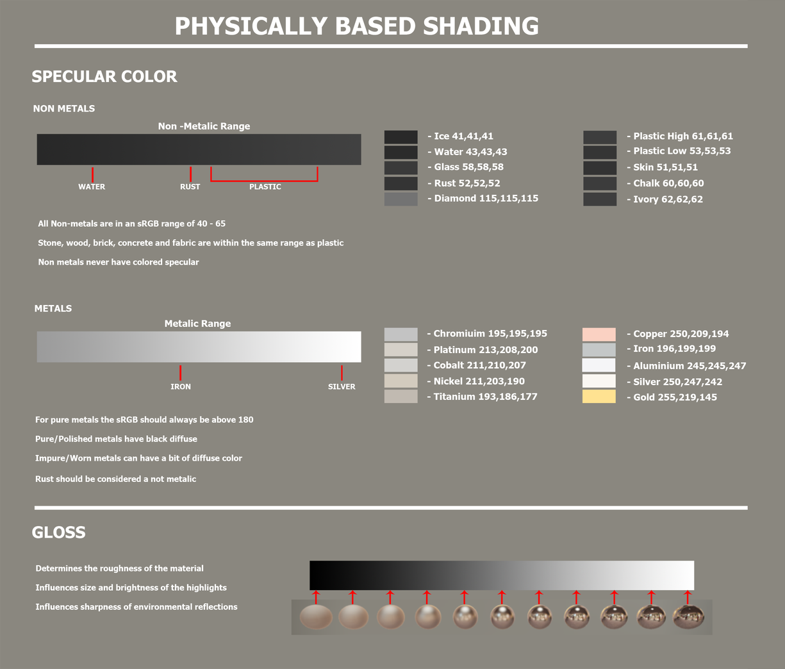(source)
The chart has been design for Dontnod team and with UE4 conventions for textures
based on the Disney “principled” BRDF use in the Unreal engine 4. (source)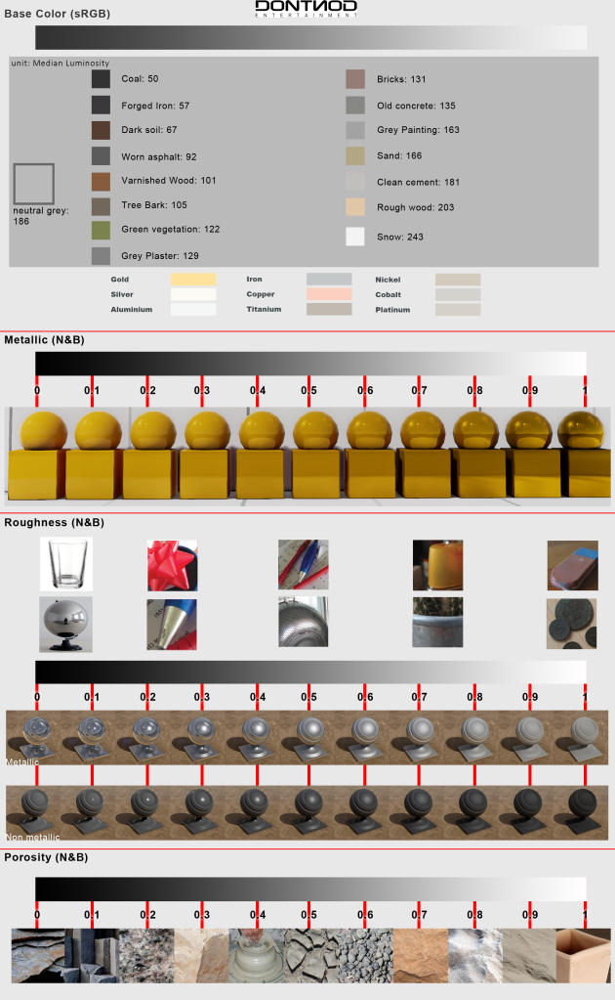
So UE4 uses slightly different parameters and handles maps a little differently
compared to other shaders/engines. In this section I will illustrate those points.
Base colour, roughness, metallic, and specular inputs take 0 to 1 values.
Porosity
The Dontnod chart include an unusual parameter named Porosity. This parameter is the “open porosity” of a
material. It can be used for driving weathering and aging effect (Pollution, rain, aging…). More
details on its usage can be found in previous blog post: Water
drop 3a – Physically based wet surfaces and Water
drop 3b – Physically based wet surfaces. In practice Dontnod use it
mainly with the dynamic wet formula provided in the mentionned previous post.
The range is remapped from 0-1 to 0-70% of open porosity. There is real worl image to
try to give a feeling of what the value mean. An extremely porous material is the clay (70%), but open
porosity can vary a lot for same material, clay could also be only 50%.
Base Colour
Base Color simply defines the
overall color of the Material. It takes in a Vector3 (sRGB
0-255) value and each channel is automatically clamped between 0 and 1.
If taken from the real world, this is the color when photographed using a polarizing
filter (polarization removes the specular of nonmetals when aligned).
Measured BaseColour values for nonmetals (intensity only):
|
Material
|
BaseColor Intensity
|
|
Charcoal
|
0.02
|
|
Fresh asphalt
|
0.02
|
|
Worn asphalt
|
0.08
|
|
Bare soil
|
0.13
|
|
Green grass
|
0.21
|
|
Desert sand
|
0.36
|
|
Fresh concrete
|
0.51
|
|
Ocean Ice
|
0.56
|
|
Fresh snow
|
0.81
|
Measured BaseColours for metals:
|
Material
|
BaseColor (R, G, B)
|
|
Iron
|
(0.560, 0.570, 0.580)
|
|
Silver
|
(0.972, 0.960, 0.915)
|
|
Aluminum
|
(0.913, 0.921, 0.925)
|
|
Gold
|
(1.000, 0.766, 0.336)
|
|
Copper
|
(0.955, 0.637, 0.538)
|
|
Chromium
|
(0.550, 0.556, 0.554)
|
|
Nickel
|
(0.660, 0.609, 0.526)
|
|
Titanium
|
(0.542, 0.497, 0.449)
|
|
Cobalt
|
(0.662, 0.655, 0.634)
|
|
Platinum
|
(0.672, 0.637, 0.585)
|
The diffuse part of the base color (the one use by the non-metallic) must be in the
range of the first gradient 50-243. There is some sample values of real world material in sRGB below the
gradient. Some of these values are base on real world measured material (from misc sources, not done by us)
and other are have been generated by Laurent Harduin. He take calibrated raw picture of representative
material, take the luminance histogram in Photoshop and use the value of the medium axis for the luminance.
Then he blur the picture and take one pixel inside the blurred region and use that as the color value. This
explain why in few case like the clean cement the color and the luminance doesn’t match perfectly. We
also lower a bit the value to take into account the invevitable specular present during the capture.
The reflectance part (the one use by metallic) must be in the range 186-255 (not
present in the chart). Some example are provided below the grey square. Most of the time the metallic color
of material match what the eye see.
Here is another example of base colour ranges
Roughness
The Roughness input literally controls how rough the
Material is. A rough Material will scatter reflected light in more directions than a
smooth Material. This can be seen in how blurry or sharp the reflection is or in how broad or tight the
specular highlight is. Roughness of 0 (smooth) is a mirror reflection and roughness of 1 (rough) is
completely matte or diffuse.
(please refer to the above image as reference)
The gradient display roughness from 0 for smooth (left) material to 1 for rough
material (right).
The grey gradient are from 0 to 255 and red segments are displayed every 1/10
with a sphere like object below to show the in-game result of the designated value.
The first row of real world image above represent no metallic object, the second row
represent metallic object. Goal is to give artist a better feeling of what is roughness.
The first row of sphere like object represent metallic object, the second row
represent non-metallic object.
Note: The roughness here is coupled with the BRDF used by the Unreal engine 4, it may
not be compatible with other engine or offline renderer.
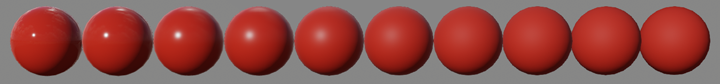
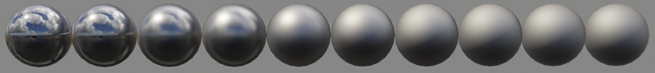
Roughness 0 to 1. Nonmetal top, metal bottom.
Roughness is a property that will frequently be mapped on your objects, in order to
add the most physical variation to the surface.
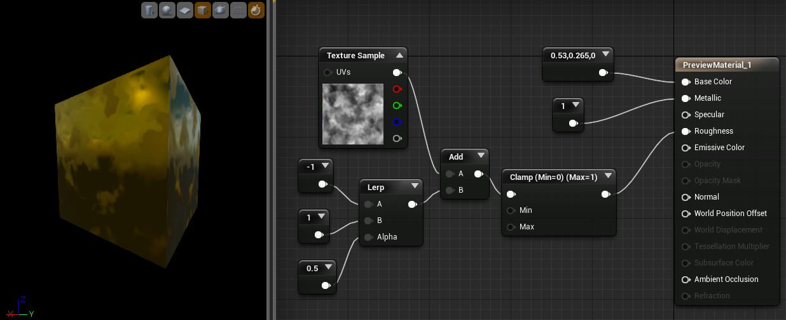
If you have been making Materials in previous iterations of the Unreal Engine and are
not accustomed to physically-based Materials, keep in mind that Roughness
maps are where you will handle most of your
Specularity texturing.
Metallic
The Metallic input literally controls how "metal-like" your surface will
be. Nonmetals have Metallic values of 0, metals have Metallic values of 1. For pure
surfaces, such as pure metal, pure stone, pure plastic, etc.
this value will be 0 or 1, not anything in between. When
creating hybrid surfaces like corroded, dusty,
or rusty metals, you may find that you need some value between 0 and
1.
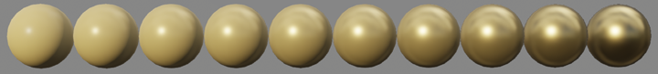
Specular (Reflectance)
The Specular input should not be connected and left as
it's default value of 0.5 for most cases.
There is no chart for the reflectance value of the Unreal engine 4, just
let the value by default and apply a cavity map on it.
It is value between 0 and 1 and is used to scale the current amount of specularity
on non-metallic surfaces. It has no effect on metals.
For very diffuse Materials, you may be inclined to set this to zero. Resist! All
Materials have specular. What you really want to do for very diffuse Materials is make them rough.
Commonly, if we modify Specular, we do so to add micro occlusion or small scale
shadowing, say from cracks represented in the normal map. These are sometimes referred to as cavities. Small
scale geometry, especially details only present in the high poly and baked into the normal map, will not be
picked up by the renderer's real-time shadows. To capture this shadowing, we generate a cavity map,
which is typically an AO map with very short trace distance. This is multiplied by the final BaseColor
before output and multiplied with 0.5 (Specular default) as the Specular output. To be clear this is
BaseColor = Cavity*OldBaseColor, Specular = Cavity*0.5.
For advanced use, this can be used to control the index of refraction (IOR). We have
not found this to be necesary for 99% of Materials. Below are Specular values based off of measured
IOR.
|
Material
|
Specular
|
|
Glass
|
0.5
|
|
Plastic
|
0.5
|
|
Quartz
|
0.570
|
|
Ice
|
0.224
|
|
Water
|
0.255
|
|
Milk
|
0.277
|
|
Skin
|
0.35
|
Additional
charts and values.
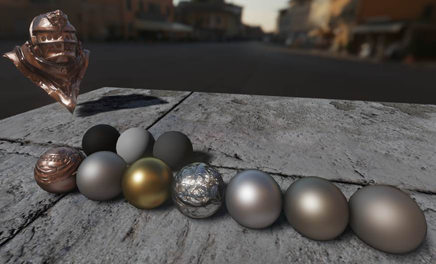
Example measured Materials. Top: Charcoal, fresh concrete, worn asphalt. Bottom:
Copper, iron, gold, aluminum, silver, nickel, titanium
Tips &
Techniques
TL:DR (Summary) (source)
Yes, metalness maps should generally be 0 or 1.
Metalness defines whether the surface is a raw metal or not
(this is important, painted metal isn't metal for
instance, its paint).
For metallic surfaces, the specular intensity is pulled
from the albedo map, while the diffuse is darkened to 0 (raw metals reflect nearly
100% of light, so they don't really have a diffuse component). This basically means that the
albedo for raw metals is black.
For insulators, or non-metals, the
diffuse color is pulled from the albedo map, while the
specular intensity is set to a fix value (0.04 or so), as most non metals reflect light in very narrow range
of values.
Gloss/roughness maps define how glossy or rough a
surface is, and how tight or wide the specular reflections are. Glossier surfaces have tighter, more intense
highlights, while rougher surfaces have wider/blurrier and more dim highlights. This applies regardless of
material type. If the surface is a glossy plastic, you make it glossy in the gloss map. For wear and
tear and such, say for where the gloss coating on the plastic is worn off, you would make it more rough in
the gloss map. You shouldn't be painting highlights or lighting of any sort into any maps with modern
shaders.
Generally engines will use a full color spec map, or a metalness map. The biggest
difference is really how the content is packed. Its true that the metalness workflow gives you less control,
but its more efficient memory wise as you can pack more info into less textures. The theory with the
metalness thing is that it is harder for artists to use incorrect specular values (artists have a tendency
to eyeball stuff, which often looks ok under one set of lighting but totally wrong in another).
As far as glossy plastic goes, you should be able to do this just fine with a
metalness map and your gloss map. Something like a car paint shader is more complex and would likely require
a custom shader.
The best way to visualize these concepts is to load up TB2/EU4, add a sphere,
and play with simple parametric materials. Adjust the gloss/roughness values, observe how the reflections
change. Play with the metalness value, etc.
UE4 - Biggest Difference (source)
UE4 does NOT use the Albedo map the same way another engine would strangely enough.
It is referred to a “Base Colour” and instead of metals being more or less black, they are
actually the opposite. Visit the source or visit UE4 - The Difference for more
information.
sRGB Color Space (gamma) (source)
Be aware that you are working in sRGB color space on your monitor when painting a
texture. In sRGB space, a 50% mid-gray is not 0.5 or 127 but rather 0.5 raised by the inverse of gamma 2.2
which equals 187 in Photoshop. In a nutshell, the reason that sRGB is used is to avoid banding artifacts. In
sRGB space you get more precision for darker colors to which the human eye is more sensitive. Before working
on colors, please make sure that your screen is calibrated properly.
Spacing per Map (source)
Diffuse/Albedo maps are generally gamma space.
Specular maps generally are Gamma space.
Gloss/Roughness maps should generally be linear space
(sRGB off), but its not a big deal if you use sRGB/Gamma space.*
Normal maps should always be linear space (sRGB off).
There isn’t a huge emphasis on colour spacing for PBR but it is noted in many
sources because those sources are trying to cover all basis and explain the nature of this genre.
Photoshop Setup (source)
Verify that your Photoshop color management is set up properly. You can access the
Color Settings from the menu via Edit->Color Settings...
RGB should be set to sRGB and Gray to Gray Gamma 2.2
By default, Gray is often set to Dot Gain 20% which will result in a color
transformation in the alpha channel. A value of 127 will come into the engine as 104 in that case which can
cause inconsistencies, so please make sure Gamma 2.2 is used instead.
Some Nifty Time-Saving Tips! (source)
- The gloss map is
one of the most important
textures. With the gloss map you can give some history to
an asset. For example, make parts of an object that were touched a lot by people
less rough.
- For non-metal objects,
don't waste time with a specular map but focus rather on the gloss
map. This will also help to save memory, as a constant specular material color
is enough in most cases.
- Put variation into the gloss map. Not just random noise but think really
where the object would be less or more rough.
- Always test the specular reaction of objects/materials, by rotating them
against a light source and viewing them from different angles. Specular is what gives objects the sense
of volume and breaks the flat look.
- Make sure that the lighting is setup properly when testing assets (you can
use a special asset test level with calibrated lighting).
- If an object has the correct physical specular color but you see hardly any
specular highlights on top of the diffuse, the gloss is likely too low. Try to increase the brightness
of the gloss map.
- [CE3] To see just the specular without any diffuse, put the Diffuse Color to
black in the material editor.
- [CE3] Use the histogram in the material editor to identify issues in the
material setup. You can easily judge the overall brightness of textures using the histogram.
Deciding Which Values to Use for Materials
(source)
Gather reference for each material type/part of the object.
Start by doing a rough block in
for each material type, this
doesn’t have to be exact but should be close enough so that you have a good base to start tweaking
from.
For each material I start with the reflectance value, these can be found in various
charts online, if I can’t find a reflectance value for a certain material, I try to determine it with
logical reasoning (ie, worn out rubber will be less reflective, brass is a mix of copper and zinc,
etc).
Reflectance values are the easiest to start off with, and give you a good base for
the other maps. For insulators, its important to keep to keep the values within the small range that
non-metals typically reflect. For metals, its important to make the diffuse black first, and then find the
appropriate reflectance value. After this I will assign a quick roughness value, usually by just sorting
materials into 3 categories (shiny, middle or rough). Then I pick an albedo color, paying attention here to
keep things consistent and not too dark. I also toggle through various skies to make sure the materials are
consistent in a variety of lighting conditions. Once this initial stage is over I fall back on observation
for the fine tuning these values, since every material is different, keeping in mind the concepts of PBR. At
this point I like to add a basic overlay to the normal map for materials that have a strong surface
variation, such as bumpy plastic.
Its important to remember that values in the reflectance map only change when there
is an actual change in material.
Colour Space Confusion and Why It Matters
(source)
Gloss/roughness maps and metalness maps tend to be linear space as well, but they
don't necessarily have to be. From a practical perspective, any input that defines a percentage value
(like gloss and metalness), makes sense to use linear color space for the texture input. This is so you can
easily mock up a material will a parametric input in your shader (which tends to be linear space), and then
easily duplicate that value in photoshop by selecting the
color with the brightness input in the color picker. The
values for these maps will not be accurately visualized in photoshop though (which works in gamma space by
default), so its important to verify the results in the actual shader/game/renderer and not worry about what
it looks like in 2D.
Generally it's important for this to be consistent throughout your project,
which maps are in linear or gamma space. Its not something that should vary
per asset, so talk to your technical artist, engineers, etc if you're confused
about which to use. Again, you don't need to set photoshop up in a special way to use linear space
textures, just remember to check the final
result in game. There are some more technical things to
consider, like if you're using gamma space specular but find a measured reflectance value in linear
space. In that case you will need to convert the values.
Lastly, all your textures do not need to be linear space "to be pbr",
I've heard this before, I'm not sure what the source of this information is but its factually
incorrect. Color space simply defines how much precision is used for the darker values (more in the case of
sRGB) vs a linear distribution of precision for the data (linear space). Color
space in regards to texture inputs actually has nothing to do with physically based rendering (other than
the fact that you may need to convert your measured base values - which depends on the source of said
values). However, most renderers that have PBR shaders, the renderer itself is in
linear space(for a variety of technical reasons), but this is something different entirely.
Dealing with Elements like Rust (source)
[Metalness workflow] In 99% of
cases, metals should be black or white but rust is an exception. You really don't want midtones
unless you are blending between two materials ( non metal and metal). Especially with something like rust.
You will end up with something that is giving off orange specular (which rust doesn't) and is very dark
in the diffuse. I would keep it close to either end of the spectrum, but not in between. The areas which are
only lightly rusted, are quite significantly less reflective than the un-rusted areas. But maybe you
would still want a metalness value of 0.1 or 0.2 or something, as its probably a bit more reflective than
0.04.
Minor science bit here:
You may remember from school that chemical reactions are irreversible, and usually
happen "instantly". the same is true of oxidation, once a molecule becomes oxidized it stays that
way forever. That's why when you want to get a rust patch cleaned off of your car, you have to sand it
right down to the bare metal and treat it from there.
Now, how to apply that to your metalness map:
Start off with white, this is your metallic layer, which will always be underneath
the oxidized layer. then take a black brush, and adjust the opacity of the brush to reflect how THICK you
want the layer of oxidation to be. the thicker the layer of oxidation, the blacker it becomes. It's
possible to have a very fine/thin layer of oxidation that still allows a lot of light to be reflected by the
underlying metal, but it's also possible for the oxidation to become so thick that no light can be
reflected by the metal beneath.
Of course, as with everything, this isn’t the only way to approach this and is
just one method someone prefers. Don’t get caught up with steps and following everything to the
letter because another approach to the above would to alter the albedo/spec map more than the metalness map,
etc. Refer to the tutorial/examples
section for more information.
Examples
Tileable Dirt & Pebbles Texture - click
here
Some Environment Textures - click
here
Cutting Torch - click
here
PBR Stylized Dagger - click
here
Video
PBR Theory Explained - click
here
PBR in Substance Designer - click
here
Additional Readings & References
Comprehensive Guide
Vol.1 - The Theory of Physically based Rendering -
click
here
Vol.2 - Practical Guidelines for PBR Texturing -
click
here
General
UDK Physically Based Lighting - click
here
Free Engines Supporting Physically Based Lighting - click
here
TGA Physically Based Lighting CGFX Shader for Maya Viewport - click
here
Science & Theory
Water Drops & Wet Surfaces PBR - click
here
Sebastien Lagarde’s Adopting
a physically based shading model
Feeding a Physically Based Lighting Mode -
click
here
SIGGRAPH 2014 Course: Physically Based Shading in Theory and Practice - click
here
John Hable’s excellent blog post: Everything
Is Shiny
John Hable’s even better blog post: Everything
Has Fresnel
The SIGGRAPH
2010 course on PBR
Always worth mentioning: The
Importance of Being Linear
Slideshow of Real
Shading in Unreal Engine 4
Mike Seymour’s Monsters
University: rendering physically based monsters
Physically Based Rendering - From
Theory to Implementation
Crytek’s PBR Presentation ft. Ryse -
Moving
to the Next Generation - The Rendering Technology of Ryse
Crafting Physically Motivated Shading Models for Game Development - click
here
Practice
Sébastien Lagarde’s summary of Rendering
Remember Me
Discussions
Polycount discussion on PBR - click
here
Polycount PBR Texturing Process Q&A - click
here
Reddit Star Citizen PBR Discussion - click
here
FAQ
I don’t know how to use a PBR system, will I need to re-learn how to
create art content?
In most cases, no. If you have experience with previous generation shaders which use
dynamic per-pixel lighting you already possess much of the knowledge necessary to create content for a PBR
system. Terminology tends to be one of the biggest stumbling blocks for artists, so I have written a section
on various terms and translations below. Most of the concepts here are simple and easy to pick up.
If your experience lies mostly with hand painted/mobile work, learning the new
techniques and workflows outlined here may be more of a challenge. However, likely not more difficult than
picking up a traditional normal map based workflow.
If I use a PBR shader does that mean my artwork is physically accurate?
Not necessarily; simply using a PBR shader does not make your artwork physically
accurate. A PBR system is a combination of physically accurate lighting, shading, and properly calibrated
art content. The deciding factor on whether or not it looks physically accurate is the texture
work.
Do I need to use a metalness map for it to be PBR?
No, a metalness map is just one method of determining reflectivity and is generally
not more or less physically accurate than using a specular color/intensity map.
Do I need to use index of refraction (IOR) for it to be PBR?
No, similar to the metalness map input, IOR is simply an alternate method to define
reflectivity.
Is specular no longer a thing?
Not quite. Specular reflection intensity, or reflectivity is still a very important
parameter in PBR systems. You may not have a map to directly set reflectivity (e.g. with a metalness
workflow) but it is still required in a PBR system.
Do gloss maps replace specular maps?
No, gloss or roughness maps define the microsurface
of the material (how rough or smooth it is), and do not replace a specular intensity
map. However, if you’re not used to working with gloss maps, it may be somewhat of an adjustment to
put certain detail in the gloss map that you would otherwise add to the specular map. Generally spec maps
(in the non-metalness workflow) are quite flat in comparison to its predecessor while gloss/roughness maps
remain more or less the same; all the microsurface details are located here. Even those that would be
too small for the normal map. (depending on the engine).
Can a PBR system be used to create stylized art?
Yes, absolutely. If your goal is to create a fantastical, stylized world, having
accurate material definition is still very important. Even if you’re creating a unicorn that farts
rainbows, you still generally want that unicorn to obey the physics of light and matter. A great example of
this is Pixar’s work, which is very stylized, yet often on the cutting edge of material accuracy.
Here is a great article about PBR in Monsters University: fxguide
feature on Monsters University
Here is another example created by our resident stevston89 of polycount:
PBR
Stylized Dagger
What is all this talk about sRGB, gamma, and linear? And why is it
important?
sRGB, gamma, and linear are colour spaces used when defining a certain colour.
A simpler way to think about it is RGB vs CMYK. sRGB stands for standard RGB colour space.
This is basically how light/information is displayed.
sRGB is for all intensive purposes, synonymous with gamma
(gamma corrected). It is of an exponential graph. 0 - 255. As an fyi, the neutral gray/mid point of a
gamma colour space is 187, not 127/128.
Linear is, as it sounds, a linear graphic. 0 - 1
Does the old workflow of baking in the AO/cavity into your diffuse and spec
still apply? (source)
[AO] No. In the PBR workflow it does not apply. (Check
with your respective engine/shader for more details) I leave it to the infamous Earthquake of Marmoset
to elaborate.
[Cavity] It can still be applied to the albedo and spec
maps. (Check with your respective engine/shader for more details) Engines like TB2 offer the ability to
input an occlusion and cavity map with sliders to adjust its influence on diffuse/spec.
Large scale AO really should not
be baked into
specular (or the metallic materials of an albedo map when using
the metalness workflow), or diffuse, this just does not make much sense physically. As mentioned above, when
you do that, your AO is occluding direct light sources, which is very much the incorrect thing to do. Just
think about it for a second, if you have the inside of a helmet, naturally your baked ao map would get a lot
darker there right? Now, put a light source directly inside that helmet, what happens in real life?
If that content is baked into your textures, you can never light that area correctly
in a game.
Is one workflow or route better than the other?
Not really, it’s just boils down to which you personally get better results
from, are more comfortable with, which engine you are using, and if you are texturing in an office, which
method they use.
Will artists need to capture photographic reference with a polarized camera
system for every material they wish to create?
No, generally you will be provided with reference for common materials by your
studio. Alternatively, you can find known values from various 3rd party sources, like Quixel’s
Megascans service. Creating your own scan
data is a very technical and time consuming process, and in most cases not necessary. However there is
a quick tutorial located here.
Is there a way to grab albedo/spec, etc values from real life?
There is! But it requires some equipment and knowledge of colour space as well
as how to use a camera. On top of that it requires knowledge of the Macbeth chart and other various
“tools” to get an accurate reading. Polycount’s almighty_gir has made a quick
tutorial on this.
Caution: If you have no clue what you are doing, you could potentially be pulling
inaccurate values. Consult the tutorial and read through the posts for a better understanding.
Where is texturing headed? Is it going to be procedural from now
on?
There’s no definitive answer for this. What I do know is that more
procedural tools are becoming more available. They are a blessing and a little bit of a curse I think.
Blessing because it speeds up production and accuracy but for those who are not competent on texturing
and rely on these programs may not see their skill level increase and if their studio does not have said
tool, well they’re on their own. Some procedural-oriented tools off the top of my head include
Substance Designer and DDO. Still if one has time, it’d be of their benefit to learn such
programs and add them to their arsenal.
Is there a central database for material values for albedo, spec, roughness,
etc?
There is and there isn’t. There is from those that are publically shared
and there isn’t from the studios whom use their values specific to their engines. Regardless, please
do take care when using values and don’t pigeonhole yourself into thinking that a value is the only
value for that material.
Any tips for making my work look good?
Ensure that you have accurate albedo, spec, and roughness values. Once you do
and a decent texture job has been done, your object will look great in any lighting condition.
Don’t adjust values for a specific lighting environment as it may not look as well in other
settings, etc.
How do I make sure I have the “exact” value needed for a
material?
There is no exact value for
any given material as in the real world, many factors influence the physical values of that item. Long
story short, just utilize some base values found online as a starting
point and adjust it in small increments until it looks like the material
you’re attempting to represent. It becomes easier with more practice and looking up values will
be needed less.
Is there a way to get better at PBR/PBT?
Yes. There are multiple ways. Some include: practice - you’ll get
no where and won’t get any better without practice. Tutorials and looking at other artists’ work
(assuming their work is accurate) will help train your eye into identifying what looks accurate.
Another way is to learn more about science and physics and the nature of light/materials and their
interaction with each other and the world around us. You kind of have to step into the realm of a
technical artist almost...just a smidge.
I’m new to PBR but it looks like this method of texturing is a lot more
troublesome than before?
Not true in my opinion. It may look this way because this is new to you but
once you’ve gotten used to it or know of the workflow, it’s actually simpler in a sense, and
quicker. You don’t have to repeat diffuse details in all other maps, ensure gloss looks
interesting VS spec and diffuse, etc. As well, more procedural based/material layering software has
come into the market that aid in next-gen texturing.
How come there is not more math and theory/concept in this
“encyclopedia”?
This doc was originally compiled/made for artists to read and get a grasp on PBR.
As such I guess I neglected those who were interested to know the underlying details of PBR. For
now please point your attention to the Additional Readings & References for more
information.
How come my textures look different in UE4 VS Marmoset VS Unity, etc?
That is because every engine handles PBR/values/light/materials differently.
For example I recently textured a vehicle in PBR and my values were fine in Marmoset but when I
brought it into Unity, they were not correct and as such made it look diluted and not textured at all.
Lacked material definition. So generally when texturing, always preview in the engine the model
is meant for.
Is there any easier way of texturing in PBR?
Short answer is yes, there is. Substance Painter/Designer and the Quixel Suite
are just 2 of the most common packages one can use to texture. They have preset materials with values
already and even have different previews depending on which engine you will ultimately export to. Not
many people texture manually now as it is rather time consuming from a production standpoint and just not as
flexible/versatile. Though being able to texture
manually and knowing how to would help with your knowledge overall.
Where’s the future of texturing headed?
My guess? If/when it becomes feasible/economical/practical, photogrammetry. It
involves taking high res photos of a subject at specific angles under ideal lighting conditions (I hear
overcast/neutral is best) and using a program, it is able to extrapolate all that data but from the examples
I’ve seen, the results (there needs to be tweaking and authoring of course) I’ve seen, they look
a little on the duller side in terms of spec/gloss.
Glossary & Terms
AO - Ambient Occlusion
CE3 - CryENGINE 3
PBR - Physically Based Rendering
PBT - Physically Based Texturing
UDK - Unreal development Kit
UE4 - Unreal Engine 4
* - Denotes that the accuracy of the
information is in review.
TL;DR - Too Late; Didn’t Read
TB2 - Marmoset Toolbag 2
F0 - base reflectance. It simply refers to how much
light a surface reflects when looking directly at it (source)
- fresnel zero (when fresnel has
zero effect; what colour is the object when fresnel has no effect)
(source)
F - Fresnel. How much light is reflected at a
grazing/glancing angle (source)
- named after French engineer and physicist Augustin-Jean Fresnel
Tools & Programs
Tools & Plugins
Materialing
Alpha -
Free Photoshop PBR Material Painting - developed by Andrew
“d1ver”
Maximov. Plugin for Photoshop.
Official Engines Supporting PBR
Unreal
Engine 4
CryENGINE
3
Marmoset
Toolbag 2
Unreal
Development Kit - with custom lighting (see additional
references)
Unity
5.0 - Making huge strides and some devs choose this instead of other
engines.
3DO - In affiliation with Skyskop and Marmoset Toolbag 2
Google
Filament Renderer - Filament is a PBR engine for Android, Linux, macOS, and
Windows; designed to be a small but highly efficient footprint on Android
Standalone Programs
Substance
Designer - Next-Gen Texturing - material
layering workflow; node based; standalone program; great for uniques or tileables
Substance
Painter - 3D Painting Software - great for
unique baked textures
Quixel's
Megascans - a material library like never before
Mari
- a 3D painting tool
Notable Artists
Joshua
Lynch - one of the pioneers in the use of
Designer, godly work
Bradford
Smith - another early adopter that paved the
way for a lot of artists
Daniel
Thiger - Lead Environment Artist over at Bungie. Phenomenal organic
work
Stefan
Groenewoud - perfect example of a mixture of old school (zbrush) and
new school (designer) texturing. Artist at Guerrilla Games (Horizon Zero Dawn)
Peter
Sekula - incredible intricate and detailed texture work (some in
designer, others in painter, etc)